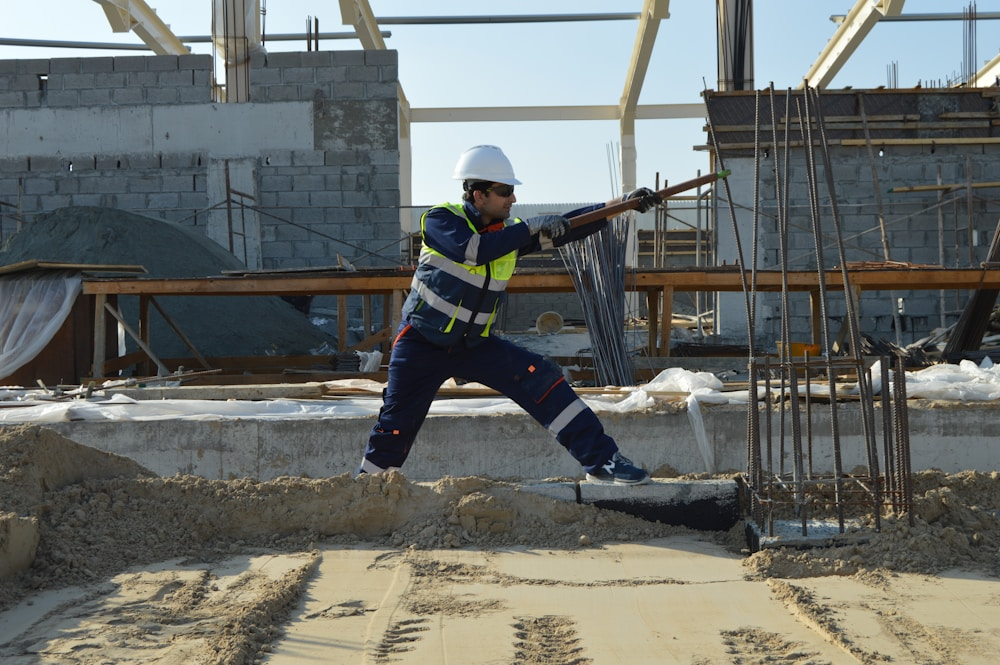

Deux attestations, deux moments clés du projet
Le texte qui fixe aujourd'hui les attestations parasismiques est le décret n° 2023-1173 du 12 décembre 2023, entré en vigueur le 1er janvier 2024. Il a modifié le Code de l'urbanisme (articles R431-16 et R462-4) et créé dans le Code de la construction et de l'habitation (CCH) les articles R122-36 et R122-37, qui disent quels bâtiments sont concernés. Les modèles d'attestation sont fixés par un arrêté du 22 décembre 2023. Le texte distingue deux moments :
- Au dépôt du permis de construire : l'attestation relative au respect des règles parasismiques « au stade de la conception ». C'est la pièce PCMI13 du formulaire de permis de maison individuelle, ou PC12 pour les autres permis. Dans le métier, on l'appelle souvent « AT1 ». Elle certifie que le projet a été conçu en tenant compte des règles parasismiques.
- À l'achèvement des travaux : l'attestation jointe à la déclaration attestant l'achèvement et la conformité des travaux (DAACT). C'est la pièce AT.2 du formulaire de DAACT, d'où le nom courant « AT2 ». Elle certifie que la construction réalisée respecte ces règles.
Un mot sur le vocabulaire : sur le formulaire de DAACT, la pièce AT.1 désigne en réalité l'attestation d'accessibilité, pas le parasismique. « AT1 » pour l'attestation au permis est donc un raccourci de métier ; sur le formulaire, cherchez la pièce PCMI13 ou PC12.
Les deux attestations se complètent : un projet peut avoir été bien conçu mais mal exécuté. Quand un bâtiment est concerné, il faut les deux.
À retenir : l'attestation au permis (PCMI13/PC12, dite AT1) porte sur le projet. L'attestation à l'achèvement (pièce AT.2 de la DAACT) porte sur la construction terminée. Ce sont deux documents distincts, qui peuvent être signés par des professionnels différents.
Quels bâtiments sont concernés ?
L'obligation dépend de deux critères combinés : la zone de sismicité de la commune et la catégorie d'importance du bâtiment.
Les quatre catégories d'importance
Le Code de l'environnement (article R563-3) et l'arrêté du 22 octobre 2010 classent les bâtiments en quatre catégories, selon le risque que ferait courir leur défaillance :
- Catégorie I : bâtiments sans activité humaine de longue durée (hangars, abris, annexes non habitées)
- Catégorie II : maisons individuelles, habitat collectif et bureaux de 28 m de haut au plus, ERP de 4e et 5e catégorie (hors écoles), bâtiments de bureaux ou industriels accueillant au plus 300 personnes, parcs de stationnement publics
- Catégorie III : écoles, ERP de 1re à 3e catégorie, bâtiments de plus de 28 m
- Catégorie IV : bâtiments indispensables à la sécurité civile, à la défense ou au maintien de l'ordre public (centres de secours, gestion de crise…)
Attestations exigées selon la zone et la catégorie
Le tableau suivant vaut pour les projets soumis à permis de construire depuis le 1er janvier 2024 (articles R122-36 et R122-37 du CCH) :
| Catégorie | Zone 1 — très faible | Zone 2 — faible | Zones 3, 4 et 5 — modérée à forte |
|---|---|---|---|
| I | Aucune | Aucune | Aucune |
| II (dont maison individuelle) | Aucune | Aucune | Au permis + à l'achèvement |
| III | Aucune | Au permis + à l'achèvement | Au permis + à l'achèvement |
| IV | Aucune | Au permis + à l'achèvement | Au permis + à l'achèvement |
Ce champ est exactement celui des règles de construction parasismique : là où les règles s'appliquent, l'attestation est due. En zone 1, aucune règle parasismique ne s'impose aux bâtiments courants, donc aucune attestation. C'est le cas de tout le département du Tarn et de la Guyane. En zone 2 (La Réunion, la plus grande partie de l'Aveyron), une maison individuelle n'a pas besoin d'attestation ; seuls les bâtiments de catégorie III et IV en ont une.
Les travaux sur un bâtiment existant soumis à permis sont aussi visés. Si les travaux n'imposent aucun calcul parasismique, l'attestation conclut simplement « sans objet ».
Ce qui a changé en 2024 : jusqu'au 31 décembre 2023, l'attestation n'était exigée que pour les projets soumis au contrôle technique obligatoire, et elle était établie par le contrôleur technique. Une maison individuelle courante n'était donc pas concernée. Depuis le 1er janvier 2024, toute la catégorie II est visée en zones 3, 4 et 5, maisons comprises. La période de transition (permis déposé avant 2024 et achèvement déclaré avant 2025) est terminée.
Antilles — zone de sismicité 5 : la Guadeloupe, la Martinique et Saint-Martin sont classées en zone 5, sismicité « forte ». Une maison individuelle y est soumise aux deux attestations. Elle peut être calculée selon l'Eurocode 8 ou selon le guide CPMI-EC8 zone 5 (édition 2020), si elle entre dans son domaine d'application. Les anciennes règles PS-MI et CP-MI Antilles ne figurent plus dans l'arrêté du 22 octobre 2010 en vigueur.

L'attestation au dépôt du permis (PCMI13 / PC12, dite AT1)
Quand le projet est concerné, l'attestation est une pièce obligatoire du dossier de permis de construire (article R431-16 e du Code de l'urbanisme). Sans elle, le dossier est incomplet. La mairie vérifie sa présence ; elle ne contrôle pas son contenu technique. L'attestation peut en revanche être examinée lors d'un contrôle des règles de construction par les services de l'État.
Ce qu'elle doit certifier
L'attestation certifie que le projet a été conçu en tenant compte des règles parasismiques applicables, fixées par l'arrêté du 22 octobre 2010 modifié :
- pour une maison individuelle : l'Eurocode 8 (NF EN 1998), ou l'un des guides de construction parasismique des maisons individuelles du ministère, si la maison respecte son domaine d'application : CPMI-EC8 zones 3-4 (édition 2021) ou CPMI-EC8 zone 5 (édition 2020) ;
- pour tous les autres bâtiments : l'Eurocode 8.
Pour une maison, l'attestateur s'appuie sur le projet tel que déposé, sur des « éléments géotechniques faisant apparaître la classe de sol » et, s'il existe, sur l'étude préalable exigée par un plan de prévention des risques. Ces pièces lui sont remises, mais elles ne sont pas jointes au permis : seul le formulaire l'est. Une étude de sol encore en cours n'est pas un point bloquant, selon la foire aux questions du ministère.
Qui peut la signer ?
- Pour une maison individuelle : un contrôleur technique agréé, ou tout « constructeur » au sens de l'article 1792-1 du Code civil, c'est-à-dire un architecte, un entrepreneur ou un technicien lié au maître d'ouvrage par un contrat. Un bureau d'études structure sous contrat avec vous pour la maison entre dans cette définition. Le constructeur n'a pas besoin d'agrément, mais il doit déclarer son assurance professionnelle sur le formulaire.
- Pour tout autre bâtiment (logements collectifs, ERP, bureaux…) : uniquement un contrôleur technique agréé.
L'attestation à l'achèvement des travaux (pièce AT.2, dite AT2)
Pour les mêmes bâtiments, la DAACT déposée en mairie à la fin du chantier doit être accompagnée de l'attestation du respect des règles parasismiques (article R462-4 du Code de l'urbanisme, qui renvoie à l'article R122-37 du CCH). Sur le formulaire de DAACT, c'est la pièce AT.2.
Ce qu'elle doit certifier
L'attestation au permis porte sur les plans ; celle-ci certifie que la construction effectivement réalisée respecte les règles parasismiques. Pour une maison, l'attestateur dispose des pièces du permis, de l'attestation déposée au permis et d'une note du constructeur indiquant les moyens de dimensionnement utilisés contre le risque sismique, notamment pour les fondations, l'ossature et les façades.
En pratique, pour attester d'un ouvrage exécuté, le signataire doit l'avoir suivi :
- des visites de chantier aux phases structurelles clés : armatures des fondations, des voiles et des poteaux avant coulage, aciers de liaison entre éléments ;
- la vérification que les dispositions des notes de calcul et des plans d'exécution ont été respectées ;
- le constat qu'il n'existe pas d'écart non justifié entre le projet attesté au permis et l'ouvrage réalisé.
Qui peut la signer ?
- Pour une maison individuelle : un contrôleur technique, un bureau d'études agréé, ou le constructeur au sens de l'article 1792-1 du Code civil. Le ministère précise qu'un professionnel atteste « au moins pour la partie des travaux qu'il a réalisée ».
- Pour tout autre bâtiment : un contrôleur technique, ou un bureau d'études agréé par le ministère (agrément instruit par la commission dite CABET).
Si le projet change en cours de route
Si un permis modificatif touche aux éléments couverts par les règles parasismiques, l'attestation doit être mise à jour. Sans attestation à l'achèvement, la DAACT n'est pas accompagnée de la pièce exigée par l'article R462-4 : mieux vaut organiser le suivi de chantier dès le départ plutôt que de chercher un signataire une fois les murs montés.

Qui peut établir ces attestations ? Récapitulatif
| Bâtiment | Au permis (PCMI13 / PC12) | À l'achèvement (AT.2) |
|---|---|---|
| Maison individuelle (zones 3 à 5) | Contrôleur technique, ou constructeur au sens de l'art. 1792-1 C. civ. (architecte, entrepreneur, bureau d'études sous contrat) | Contrôleur technique, bureau d'études agréé, ou constructeur |
| Autres bâtiments (cat. II à IV selon la zone) | Contrôleur technique uniquement | Contrôleur technique ou bureau d'études agréé |
Le bureau d'études structure
Pour une maison individuelle, le bureau d'études structure qui a conçu les fondations et l'ossature, sous contrat avec le maître d'ouvrage, est bien placé pour signer les deux attestations : il détient les notes de calcul, connaît le projet et peut suivre le chantier aux phases structurelles. Pour les autres bâtiments, il ne signe pas l'attestation au permis : il produit les études (notes de calcul, plans, notice de cheminement des charges) sur lesquelles s'appuie le contrôleur technique.
Le contrôleur technique
Le contrôleur technique (souvent appelé « bureau de contrôle ») est agréé par l'État. Pour les bâtiments autres que les maisons, c'est lui qui signe l'attestation au permis. Il est par ailleurs obligatoire pour certains ouvrages, notamment les bâtiments de catégorie III et IV en zones 2 à 5, et, en zones 4 et 5, les immeubles dont le plancher bas du dernier niveau est à plus de 8 m du sol. Il vérifie de manière indépendante les calculs et la mise en œuvre ; il ne conçoit pas la structure.
Attention aux Antilles (zone 5) : la conception parasismique en zone de sismicité forte demande une pratique régulière : définition du spectre de réponse, classe de sol, dispositions constructives propres à la zone 5. Dans plusieurs communes de Guadeloupe (dont Petit-Bourg), de Martinique et à Saint-Martin, un arrêté du 17 juin 2022 permet en outre d'utiliser un spectre issu du microzonage sismique à la place du spectre réglementaire. Vérifiez que votre bureau d'études a des références dans la zone.
Comment MH Structure peut vous aider
MH Structure accompagne les projets soumis aux attestations parasismiques, avec une agence en Guadeloupe (zone de sismicité 5) et une autre dans le Tarn (zone 1, où aucune attestation n'est exigée, à proximité de l'Aveyron, majoritairement en zone 2) :
- Vérification de l'obligation selon la zone sismique et la catégorie de votre bâtiment
- Pour une maison individuelle : établissement de l'attestation au permis (PCMI13, dite AT1) à partir de nos notes de calcul
- Suivi de chantier aux phases structurelles clés et établissement de l'attestation à l'achèvement (AT.2) pour les maisons que nous avons étudiées
- Calculs selon l'Eurocode 8 (NF EN 1998) ou les guides CPMI-EC8
- Pour les autres bâtiments : études et notes de calcul remises au contrôleur technique qui signe les attestations, et coordination avec votre architecte et votre maître d'œuvre
Photos : OANA BUZATU — via Unsplash